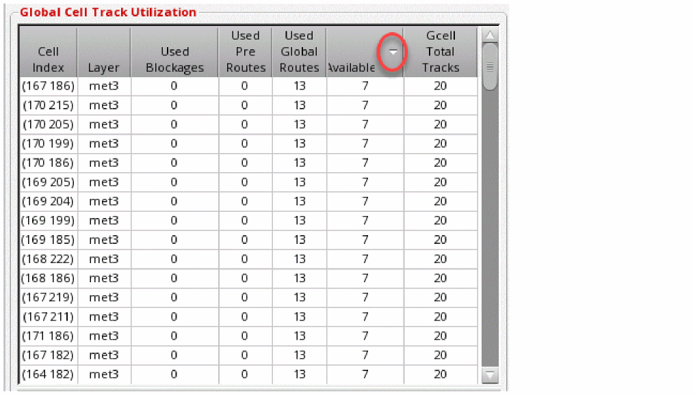

Sorting the Global Cell Track Utilization Table
To assist in the analysis of congestion, you can sort each column in the Global Cell Track Utilization table. To do this, click the header of the column to be sorted.
To reverse the sorting of the column, double-click the column.
In the following figure, the Available column in the Global Cell Track Utilization table is sorted in descending order. The triangle on the column name represents whether the sorted column is ascending or descending order.

Related Topics
Return to top